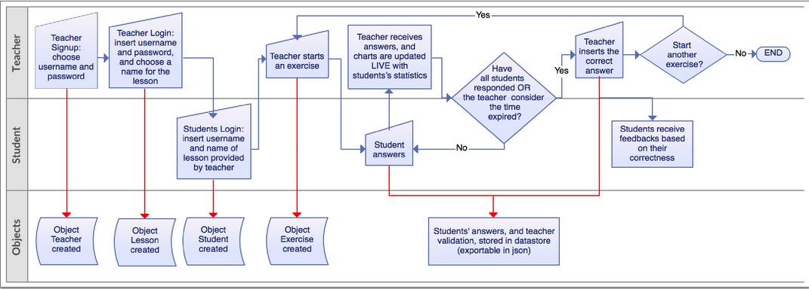

The general paradigm behind a School-Tagging platform is illustrated in the diagram of figure~\ref{fig:flowchart}. There are two user entities: teachers and students. After a teacher logs in the platform, she can start a new session by choosing a unique string identifier. This token is communicated to the students in the classroom, who have to use it to access the session. As they do so, their names become visible on the teacher's interface. After all students have accessed the platform, the teacher can choose a single exercise instance (e.g., a sentence to annotate) which is sent to all the students. As the students answer, the teacher is able to monitor in real-time each single answer and all aggregated answers via an interactive chart. After all students have answered (or the teacher decides that the time is up), the teacher can optionally promote some discussion in the class (e.g., asking specific students to justify the chosen answer). Finally, she is asked to select the correct answer. This validation generates an immediate feedback to the students. All answers are permanently written in a centralised datastore, which allows to keep track of students and classrooms progress as well as makes the data available for research purposes.
Grammar exercises
In the current prototype we have implemented 2 grammar game-exercises.
\begin{enumerate}
\item In the first one, the {\bf{CHOOSE-WORD}}, students are presented with a sentence and they have to select all entities\footnote{An entity can be a discontinuous span such as the underlined verb in: \emph{She \underline{has} always \underline{wanted} to visit China}.} (morphemes, single words or word sequences) that belong to a specific grammatical category.
\item In the second exercise, the {\bf{CHOOSE-CATEGORY}}, students have to provide syntactic information of a linguistic entity which is highlighted in a given sentence. Figure~\ref{fig:classexercise} illustrates an instance of this exercise.
\end{enumerate}
%In the current implementation the two exercises are redundant with respect to the type of annotation that the systems gathers from the exercises. But in the
The two exercises are complementary to each other with respect to the type of annotation the students input into the system. The first exercise identifies how each sentence is segmented into linguistic units (entities), each being mapped to a coarse grammatical category. The second exercise, enables to ask students more fine grained syntactic information about highlighted entities (e.g. number for nouns, mode and tense for verbs).
\newline
Currently, the set of sentences from which exercises are generated is a pre-built corpus of few hundred sentences. In future versions of the platform, we are planning to allow teachers to input their own sentences or extract them automatically from the Internet.
Technical Specifications
The current project's implementation\footnote{The source code of the project is publicly available at \url{https://github.com/erpreciso/school-tagging}.} is based on the Google Application Engine (GAE) framework\footnote{\url{https://cloud.google.com/appengine}}. GAE enabled us to quickly develop a web-based prototype, which was easily deployable on the Internet, while eliminating all efforts in maintaining a local server, and providing immediate integration of a cloud system for data hosting (the datastore). This technology allows full scalability up to an unrestricted number of users: with no extra effort, the platform could be potentially extended to an unrestricted number of schools across different countries, producing a significantly large volume of multilingual and cross-cultural annotated data. This could foster the creation of a network of students and teachers who could exchange not only their experience, but could provide suggestions for improving the system, while building an international community of expert users.
\newline
The backend is implemented in Python, which makes use of two main libraries: webapp2\footnote{\url{https://webapp-improved.appspot.com}} (lightweight Python web framework compatible with Google App Engine) and jinja2\footnote{\url{http://jinja.pocoo.org}} (full featured template engine for Python).
\newline
The frontend development is based on Javascript, and makes use of the HighCharts\footnote{\url{http://www.highcharts.com}} graphical library for displaying interactive charts on the teacher interface.
\newline
%InfoVis Toolkit\footnote{\url{http://philogb.github.io/jit/index.html}}, Data Driven Documents\footnote{\url{http://d3js.org}}, HighCharts\footnote{\url{http://www.highcharts.com}}, Google Charts\footnote{\url{https://developers.google.com/chart}}.
Two main interface templates are available, one for the teacher and one for the students. The Google Channel API is used as interaction framework to enable real-time communication between the students and the teacher. The interactions between the server and the javascript clients works by opening a unique channel using a token identifier.
\newline
Regarding the Data Storage, we are using the Google App Engine Datastore, which is built on top of the Bigtable distributed storage system~\cite{Chang:2008} with implementation of memcache to improve performance and avoid transactions latency issues and accessible via the NDB Python API\footnote{\url{http://cloud.google.com/appengine/docs/python/ndb}}, through which the datastore can be exported in JSON format.
%% ST: memcache? NDB Datastore? C'e' un link?
%% SM: aggiungerei nelle specifiche tecniche che l'export è disponibile in JSON; "datastore" è il nome corretto del database che usa Google, ma per un non tecnico potrebbe sembrare una dicitura generica, lasciandolo col timore di una struttura chiusa ed oscura e un utilizzo dei dati ostico
Testing
We have conducted a pilot study of the current platform in the computer-science lab of an Italian\footnote{The current prototype has an Italian and an English version.} junior-high school equipped with 16 PCs. Two different classrooms (grade 6 and 9) participated in the test with a total number of 48 students, divided in 4 different groups. They have accessed the online platform using the Chrome browser\footnote{Other browsers (i.e., Firefox and Safari) have been successful tested in our lab.} installed in the local machines.
\newline
The students responded very positively to the novel methodology: in an anonymous questionnaire the overall majority has answered that they liked the system (88.5\%), that the teacher's feedback was useful (77.1\%) and that they would like to use the system regularitly in class (87.5\%).